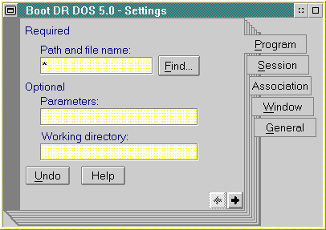

The Program Page of the Settings Notebook for a VMB
All that is needed in the Path and file name field is an asterisk.
[Back: The DOS Settings Dialog of the Settings Notebook]
[Next: DOS Settings - DOS_STARTUP_DRIVE]